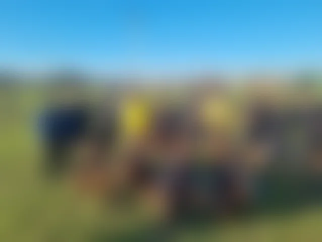

School gathering
Original article not confirmed
Demonstration only · publication permission pending.A sourced visual collection of school heritage, technical learning and community life.
Photographs are shown in blurred form for demonstration purposes only. Publication and reproduction permission remain pending. Source links are provided where available.
